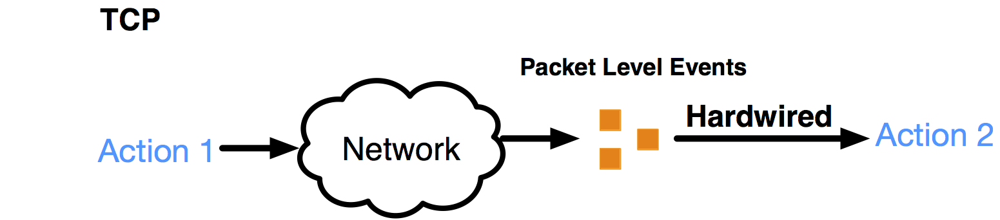
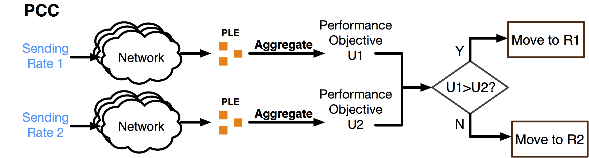
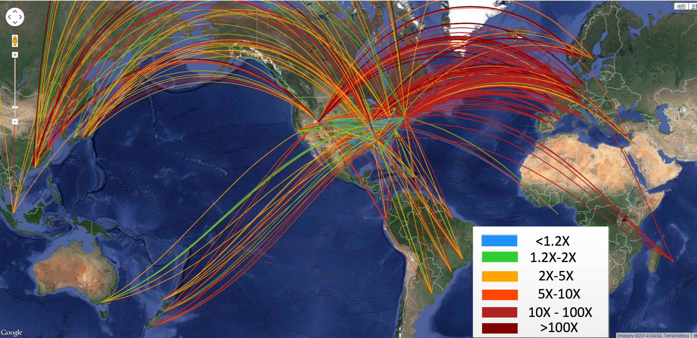
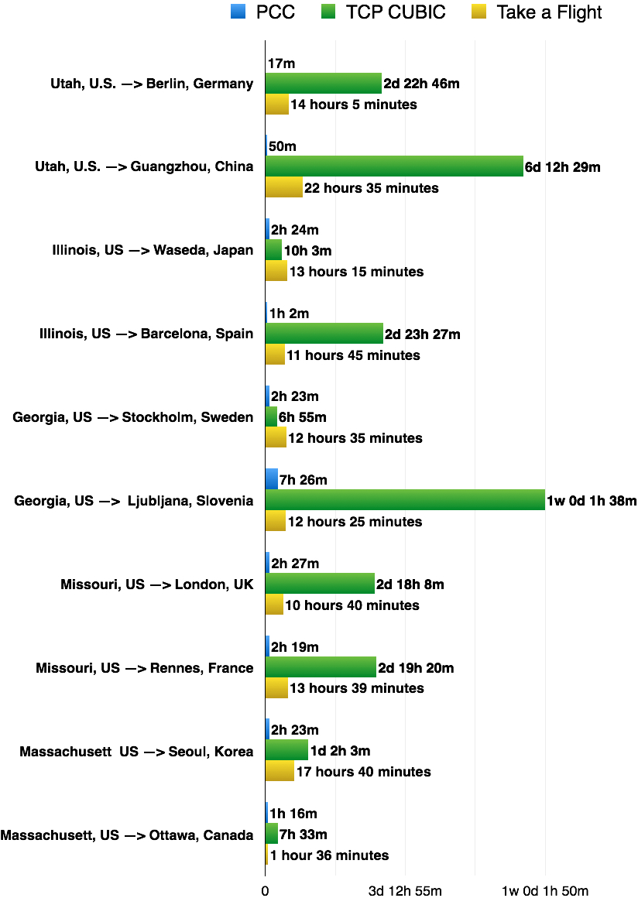
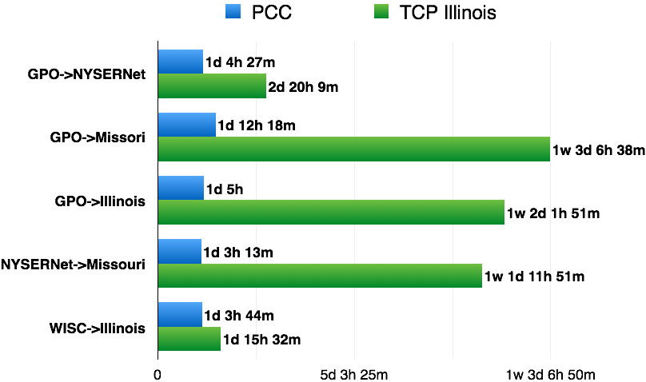
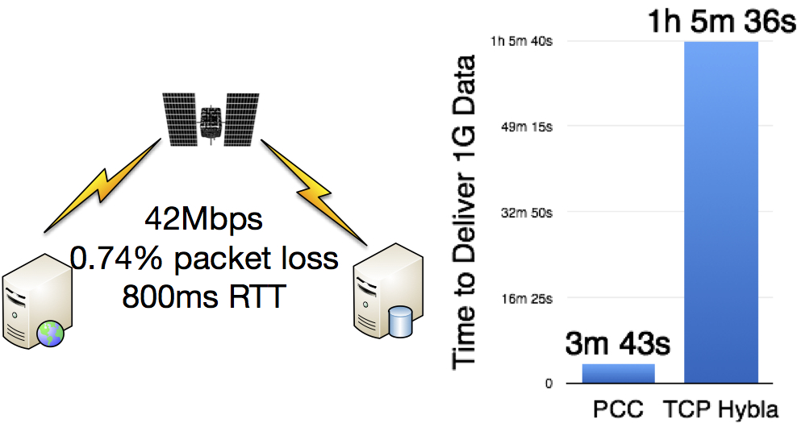
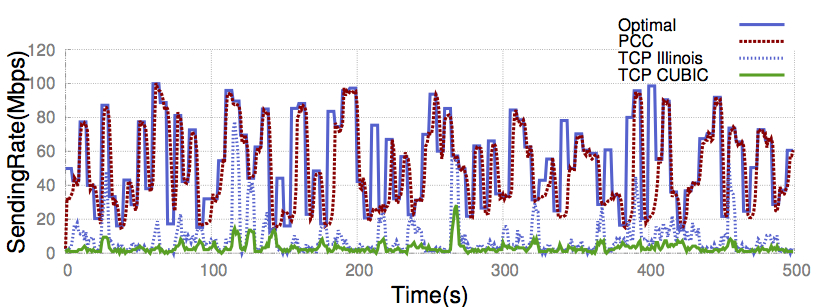
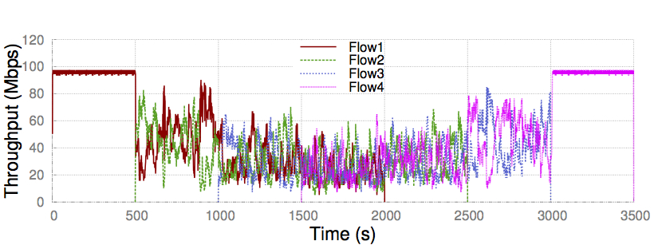

The TCP family has failed to achieve consistent high performance in face of the complex production networks: even special TCP variants are often 10x away from optimal performance. We argue this is due to a TCP's fundamental architectural deficiency: hardwiring packet-level event to control responses without understanding the real performance result of its action.
We propose Performance-oriented Congestion Control (PCC), a new architecture that achieves consistent high performance even under challenging conditions. PCC senders continuously observe the connection between their actions and empirically experienced performance, enabling them to consistently adopt actions that result in high performance.
Read More...
Papers
PCC: Re-architecting Congestion Control for Consistent High Performance
Mo Dong*, Qingxi Li*, Doron Zarchy**, P. Brighten Godfrey*, Micheal Schapira**
*University of Illinois at Urbana Champaign
**Hebrew University of Jeruselem
Compare PCC and TCP in Action
Use PCC
A prototype of PCC is available for download and can be used to deliver data. The userspace implementation is on UDP, but the future version will be sender-only change in TCP's rate control core without changing the protocol.
Goto Github RepoWhy TCP's Architecture is Broken
 The TCP family's hardwired mapping control architectureThough using different control algorithms, all TCP's variants share the same hardwired mapping rate control architecture: hardwiring certain predefined packet-level events to certain predefined control responses. The design rationale behind the hardwired mapping architecture is to make assumptions about the packet-level events. When it sees a packet-level event(e.g. packet loss), TCP assumes the network is in a certain state (e.g. congestion) and tries to optimize performance by triggering a predefined control behavior(e.g. halving window size) as the response to that assumed state. In real networks, assumptions fail but TCP still mechanically carries out the mismatched control response, resulting in severely degraded performance and very unfortunately, without seeing its control action’s actual harm on performance.
How PCC Works
 PCC's control architecture is based on emprical observed performanceePCC rises from where TCP fails, by associating a control action (change of sending rate) directly with its effect on real performance. For example, when a sender changes its rate to r and gets SACKs after sending at this rate, instead of trigging any predefined control action, PCC aggregates these packet-level events into meaningful performance metrics (throughput, loss rate, latency, etc.) and combines them into a numerical value u via a utility function describing objectives like “high throughput and low loss rate”. With this capability of understanding the real performance result of a particular sending rate, PCC then directly observes and compares different sending rates’ resulting utility and learns how to adjust its rate to improve empirical utility through a learning control algorithm. By avoiding any assumptions about the underlying potentially-complex network, PCC tracks the empirically optimal sending rate and thus achieves consistent high performance.
High Perforamance Out of Box
Big Data Delivery Over Internet
Based on our large-scale experiments over the global commercial Internet, PCC can beat TCP CUBIC (the Linux kernel default) by more than 10X on 44% of the tested sending-receiving pairs.
 The scale of our global Internet experiments and the improvement of PCC over TCP CUBICWe use several representative samples to compare how long it takes to deliver 100GB of data when using PCC, TCP or just taking a flight and carrying the data with you.
Huge Data Delivery over Dedicated Network
Have huge data (10TB/delivery)? Own a fast network? Can provision dedicated network capacity? Don’t waste your capacity! To test this scenario, we provisioned multiple fully dedicated 800Mbps links across the GENI Internet2 backbone. Here is the time comparison to deliver 10TB data.
Satellite Internet
On an emulated WINDS satellite Internet connection based on real-world measurement, PCC delivers data 17X faster than TCP Hybla.
Rapidly Changing Networks
We tested TCP and PCC on a network path where available bandwidth, loss rate and RTT, are all changing every 5 seconds, with bandwidth ranging from 10Mbps to 100Mbps, latency from 10ms to 100ms and loss rate from 0% to 1%. Comapred to TCP variants, PCC tracks the optimal rate closely.
 PCC tracks optimal rate closelyMore in paper
We have more experiements demostrating PCC's consistent high performance including: (a.) unreliable lossy links (10-37X vs Illinois); (b.) unequal RTT of competing senders (an architectural cure to RTT unfairness); (c.) shallow buffered bottleneck links (up to 45X higher performance, or 13X less buffer to reach 90% throughput); (d.) PCC performs similar to ICTCP in incast scenario in data centers.
Stable Convergence and Fairness
PCC’s control algorithm is selfish in nature. Surprisingly, it can achieve fairness and much more stable convergence than TCP. The following is a typical dumbbell topology convergence experiment, 100Mbps, 30ms latency bottleneck. Four flows sequentially arrive with 500s interval. Each flow sends for 2000s.
PCC converges to fairness point stably

TCP shows very unstable behavior and high rate variance
Flexible Performance Objectives
PCC has a feature outside the scope of the TCP family: PCC can explicitly express heterogenous data delivery objectives just by plugging in different utility functions, without the need for complex AQM mechanisms, which is necessary to cater to different applications’ objective when using TCP.
For example, “Bufferbloat + FQ + TCP” is better for throughput-hungry applications but “Codel + FQ + TCP” is much better for latency-sensitive interactive applications that have the objective of maximizing its throughput-delay ratio, called the power. To make our point, we take this scenario and show with PCC and a latency sensitive utility function, “Bufferbloat + FQ” and “Codel + FQ” render no power difference for interactive flows and with either, PCC achieves higher power than “TCP + Codel + FQ”.

Contact
Mo Dong, Qingxi Li, Doron Zarchy, P. Brighten Godfrey, Michael Schapira